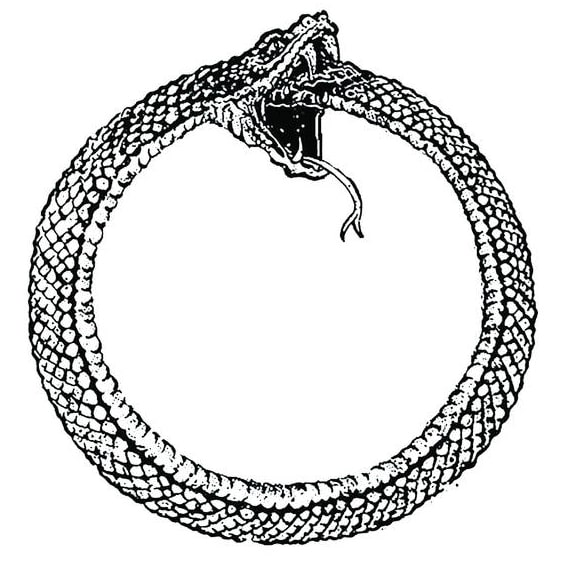

- 你看到什么就是什么
- 如果谈论形而上学的我
- 南皋桥
- 鼻屎的名字
- 所有东西的名字都将烟消云散
- 我一抬头就有一架飞机飞过
- 佛祖
- 句点（一场音乐）
- 两人
- 谦和的降落
- 墓
- 都他妈是相
- 跳步
- 幸福
- 隐藏
- 从三摩地离开之后
- 城堡
- 决明子
你看到什么就是什么
如果你眼前有一盏台灯一双眼镜一个用来包一次性筷子的塑料袋一个折叠梳子一个钱包一罐白茶一台笔记本电脑一双打字的手那就可以说
不用担心有没有人在背后看你他是否觉得你土不土帅不帅屌不屌酷不酷因为你看到的东西就是你你写的东西就是你你不用想
那么多
如果谈论形而上学的我
我是宇宙的边界
南皋桥
从太湖骑车回来
路过一片废墟
好像记得是个村
但我忘了名字
我问施哲炎
这是哪
他说不知道
我问百度地图
这是哪
百度也不知道
我说
操，真狠
拆得连名字都没了
鼻屎的名字
我爱抠鼻屎
鼻屎也有名字
抠了一排
我把它们叫做
坨一 坨二 坨三 坨四 坨五
所有东西的名字都将烟消云散
踩到一粒种子
她便静止了一百年
就连眼镜也看不清空间如何停顿
时间如何后退
脚下一痒
树就长进了身体
百年足以让鸟变成雨 蛊变成盅
而她变成网络 悉悉簌簌
如语言在盘旋 也许是风
她头发长七十米 天气预报般知道
明天有一只小鸟飞过
罗宾还是旅鸫
不重要 就像a和b并不必然
命名总是一场事故
我一抬头就有一架飞机飞过
树叶在水里摇出
没人能刺破的镜面
云发源于水而投影于天
飞机的小身体划破
射灯前方光线
如一把剪刀 临行前
裁开一一相乘得一
为什么同一片天里没有两架飞机
天说
它不愿太复杂
佛祖
诗需要静，或一声尖叫。你意想不到
好音乐也是
你不能预判，我就占了先机
但始终出人意料的是佛祖
我怎么装也装不过佛祖
句点
如何消遣我苏醒的诗性
一双鞋 一只碗 都可以成为一个句点
一声巨响 以及阴影脱胎后的清楚
让水泥挡住你的路
你的失眠比你的催眠更甚
鱼的惊悸被你的尿液遣返
让藻里虚浮的泡沫划过一个半月型的弧
半月型 是什么型？
回响让噪音更响
与其说 风不像风
不如说 叮咚作响的暖炉 让别处的夜有阴晴圆缺
没有悲欢离合
哀悼的溢满
举杯的猝死
听泉水叮咚响的被轰走
噪音更大了
如果没有噪音 哪来的音乐
（如同 没有0哪来的一）
但中间不是总有零点五
几位小数 总能让你羞愧 虚伪的傲慢的
人 不是鬼
化成灰
也不过一个句点
两人
一万根牙签戳一个洞 GAS和
森林的挪威 让黑人电影里的念白从
无到无有
长出一根茎 移根的树 梅雨来时
山上的松枝都长出新针
泥土里溅起闪电 在露珠里面看见
镜面
两个我在雷雨里奔走
一个威胁另一个的存在
人 之所以人
是面对自己幽灵时的窘迫
注：GAS = Wolfgang Voigt
谦和的降落
1
吸收我吧 吸收我到地球的重心
肉身怎么能活在仙境 绝望的
眼耳口鼻舌
熟了一地
2
你被白灼成水蒸气 丝一般 划过窗
天蒙蒙然如你的心境被重写
像楔子掉进螺栓
你和你天分从来不太匹配
印上章 肉身摆上餐桌 它便被
待价而沽
3
要是卖不出好价钱也不要担心
所有梦里出现过的
都会再出现
包括
买过的东西
没买过的东西
如果连问题都是无限
还有什么谜底
墓
七月的第二天你在森林里打坐
一座坟墓无声绕到你的背后
交给你一朵水仙 一双黑色袜子
你便知道你是你最神秘的伙伴
都他妈是相
睡不着的时候我就想写诗
就像胖子越胖越渴望美食
丑男越丑越爱在网上意淫美女
某种程度上
都是绝望者的麻醉剂
找点乐子
让自己没那么想死
我知道这些都他妈是相
写出来就创造了一个新的相
越积越多
就构成了这个唬人的世界
那些看似不绝望的人
健身
旅游
营养均衡
有的还会玩点乐器
每天起床都
看看镜子里的自己是不是
美美的
这些人比较幸运
其实当然是更不幸
被相包裹得太好
于是再也想不起背后的东西
那他们有胆量看看吗
试试三天不睡觉
十天不吃饭
或者
上点L
结果发现那后面什么都没有之后
他们还有胆量继续活着吗
跳步
人在梦里擅长跳步。要怎么用逻辑解释呢？
让一个通往死的疑问，变得没头没尾，如一条长蛇。
眼睛能创造一个概念吗？你能对概念自慰吗？
创作一本书，一个镜片，透过它看见相，
相看了看你。
相和你都是要死的，不是吗？
断裂，你的断裂越多，天分就越多。我抄的。速度，
代表脱俗。人类能做到最雅的事是什么？
乱伦。更雅的事，你猜。

幸福
为了人生的大幸福
有必要对仙境和日常做一个区分
隐藏
叶逼真得像一张墙纸
燃烧弹映出帽子的金属光泽，绊倒一个
过路的秃头
她的金发碧眼，与之不相称。他们
半秃的孩子喃喃道：自然爱隐藏
中产阶级看不见穿墙的鬼
中空的树，腐坏的脑，只把
敦州做汴州
嬉皮士取道北京，舔过
香山、象堡、圆明园
然后把一个耳后的漩涡
酿成海淀孩子的红宝书。大祸
临头
万松岭的一棵松，贩卖一只脚
泥泞腋窝，嗡嗡嗡作响，静观
一场浩大的政变
嬉皮士穿到宋朝，做牙医
看一颗蛀牙里是否藏着一棵松
一片森林里是否藏着一杯齿
妓女悄悄越界，递来
时代不满的气候（口臭）：左派向右
右派
向左
扰乱在寂寞里度假的龚山燕
光头先生，你找到一个
粉红色头发的小姐
她头屑多多，就像你的离愁
她黑色的眼，金属般凝望九州
燃烧的旷野和电。闭眼
才能看到一切，自然一声轻叹
而后接着道
我与我的空白，太白，才衬得夜
逼真得像一张墙纸
从三摩地离开之后
不让你知道所有事
是上帝的宽容
城堡
把一则信纸 装进久违的鞋盒里
翻开尘封的鞋带飘零 南望地毯下的灰
沉没在黑色尼龙雪山里的骨灰盒
香烛举案齐眉 棉纺织技术
把一个信箱 装进一张信封里
同一个信封 你别弄错
煤灰雪纷飞 喑哑的凋残的致慧的慕禅的
压缩进一真空的空白里
词语之空白 在于找不到一个cube
雪山无声逼近你和你的历史
抓住你八英寸长的激动软骨
throbbing gristle
侏儒或一个坏韵？ midget
信纸在哪？你和你的诗都送达了吗？
把镜子放在镜子前
你和你的拖鞋一起
滚滚向前
把前方困在前方里
卡夫卡 你知道
城堡的门就将会打开
决明子
我沉进我的梦里
把梦之梦连成梦之梦连成梦之梦
隧道逆行 而横亘于路中间擀面杖不知道「今天」这个词的分量
它要狂奔 它要含混
你如何进入你的梦空间？
一 持续不足的睡眠
二 不时中断的睡眠
三 一点点大麻的力量
你的梦向你发问
你还记得我吗
像不像 你还记不记得和之前的女友出去开房检查酒店有没有摄像头的那一刻
擀面杖与面条
a graceful noodle and ballet
你的梦还记得你吗
如果逆天而行那你必死
像不像 如果你问梦
是否今天 明天 都是必生
必死 必生 必死 决明子
那梦会告诉你它 生过 死过
过劳死 自然生 不事天命
连待产期都不看
的悲壮弃绝吗？